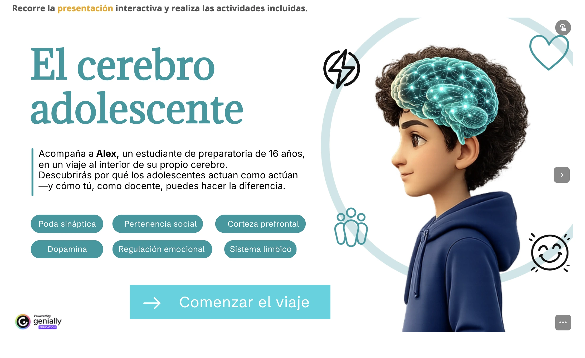

Explicar mediante storytelling
La narrativa permitió introducir los conceptos como parte de una experiencia y no como una sucesión de definiciones aisladas.
Presentación interactiva · Neuroeducación
Una experiencia de storytelling para comprender qué ocurre durante la adolescencia y cómo ese desarrollo influye en la toma de decisiones, las emociones y el aprendizaje.

Por qué lo diseñé
En el trabajo con adolescentes, ciertas conductas suelen explicarse desde etiquetas: falta de compromiso, inmadurez, impulsividad o desinterés. Esta presentación se diseñó para ofrecer un marco más amplio desde la neuroeducación.
El objetivo fue ayudar a los docentes a comprender que el cerebro adolescente continúa en desarrollo y que procesos como la regulación emocional, la planeación, la evaluación de riesgos y la búsqueda de recompensa influyen directamente en la experiencia escolar.
Explora el recurso
Recorre la presentación completa dentro del sitio o ábrela en otra pestaña para verla a pantalla completa.
Decisiones de diseño
El recurso se construyó para traducir conceptos complejos sin perder rigor y para conectar la neuroeducación con situaciones reales de la práctica docente.
La narrativa permitió introducir los conceptos como parte de una experiencia y no como una sucesión de definiciones aisladas.
Los conceptos científicos se presentaron con un lenguaje accesible, conservando su sentido pedagógico y evitando explicaciones reduccionistas.
Cada explicación se vinculó con decisiones, emociones y conductas que los docentes reconocen en su trabajo cotidiano.
El recurso buscó transformar la mirada del docente: pasar del juicio inmediato a una comprensión más informada del desarrollo adolescente.
Cómo se utilizó
La presentación formó parte de la Unidad 1 “Adolescencia, entorno digital y habilidades del siglo XXI”. Se utilizó después de recuperar las experiencias de los participantes y antes de analizar las implicaciones del entorno sociodigital.
Recuperar ideas previas y situaciones observadas en el aula.
Recorrer la narrativa, detenerse en conceptos clave y relacionarlos con ejemplos.
Reinterpretar conductas y conectar el desarrollo adolescente con decisiones pedagógicas.
Lo que aprendí diseñando este recurso